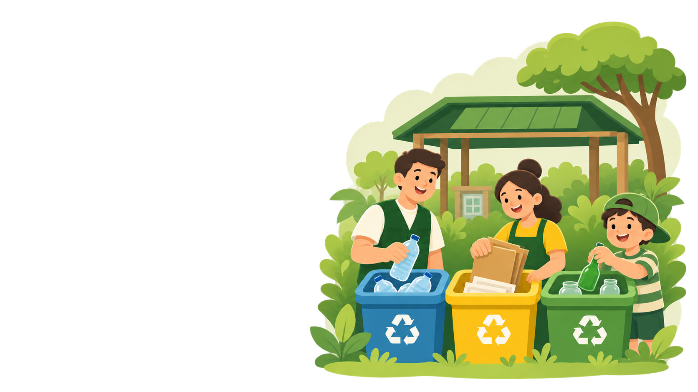

Lingkungan lebih bersih
Sampah terkelola dengan baik, lingkungan jadi lebih sehat.
Edukasi, pilah, dan kelola sampah bersama BankSampahKu.

Yuk, wujudkan lingkungan yang lebih bersih, sehat, dan berkelanjutan.
Sampah terkelola dengan baik, lingkungan jadi lebih sehat.
Sampah yang dipilah bisa dimanfaatkan kembali.
Edukasi, aksi, dan kebiasaan baik untuk masa depan yang lebih hijau.
Kenali lebih dekat BankSampahKu melalui berbagai informasi berikut.
Video edukasi akan tampil di sini.
Masuk untuk mengelola setoran, saldo, dan aktivitas bank sampah Anda.
Butuh akun contoh? Buka halaman masuk lengkap.